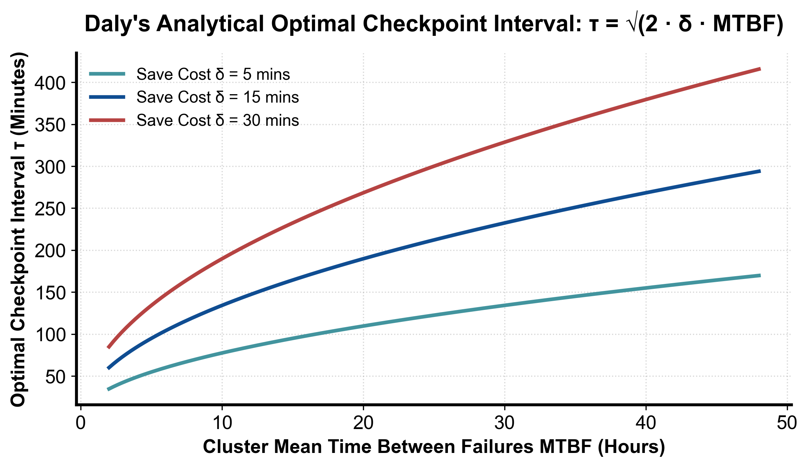

flowchart LR
NodeFault["某计算节点发生 Xid 崩溃或通信断联"] --> Heartbeat["控制面探测器毫秒级发现心跳丢失"]
Heartbeat --> Cordon["自动隔离污染坏节点 (Cordon & Taint)"]
Cordon --> HotSpare["从冷备池动态调拨同规格健康节点加入拓扑"]
HotSpare --> Reload["从最近持久化 Checkpoint 载入权重并重建 NCCL 通信环"]
Reload --> Resume["作业恢复正常训练，全过程自动化自愈无需人工干预"]
第 8 课：故障恢复、Checkpoint 间隔与多租户事故设计
参考答案版：包含完整代码实现与问答题深度参考解析。建议先独立完成练习题后再展开核对。
本课目标与完成标准
本课产出：计算 Young 近似 checkpoint 间隔，并给出检测、隔离、恢复、复盘的端到端事故方案。
通过要求：唯一代码填空题通过给定检查；Q1～Q3 都给出因果链；能指出一个正确性边界和一个性能/运营取舍；总分至少 8/10。
与既有六条主线的边界
rl/lesson12 和 train/ 提到 checkpoint；本课从平台 MTBF、恢复风暴、租户隔离和运营成本收束全套课程。
前置：Linux/网络基础、runtime 补充线、train 分布式章节。本课只补 AI Infra 缺口，不重复已经完成的 kernel 或并行算法推导。
核心心智模型
核心操作与执行流程图解

图 8-1：万卡集群 MTBF 故障率与 Daly 最优 Checkpoint 周期曲线模型（基于 scientific-figure-making 绘制）
图 8-2：万卡分布式集群节点崩溃自动容隔离、热替换与自愈恢复全流程
1. 它是什么，解决什么问题
在万卡（10,000+ GPUs）乃至更大规模的现代超算基础设施中，“硬件单点故障是系统运行的常态，而非罕见例外”。
这一残酷的工程现实由基础可靠性统计规律所决定： - 单台 GPU 服务器（包含 8 张加速卡、高频 CPU、海量 DDR5/HBM 内存、NVSwitch 芯片、多张 400Gb RDMA 网卡及高速光模块）的平均无故障时间（MTBF）虽然可以长达数千小时； - 但在包含数千台物理机的万卡集群中，由于紧耦合分布式训练的可靠性服从独立事件概率串联模型： \[\text{MTBF}_{\text{cluster}} = \frac{\text{MTBF}_{\text{node}}}{N_{\text{nodes}}}\] 对于万卡规模集群，整个集群的平均无故障时间 \(\text{MTBF}_{\text{cluster}}\) 往往被压缩至仅数小时甚至更短（如图 8-1 所示）。这意味着每隔几个小时，集群中就必然有某张 GPU 发生 Xid 掉盘、ECC 双位错误、或者由于光模块功率衰减导致网络断联。
在全互联集合通信中，任何单卡的物理崩溃都会导致全集群同步屏障彻底锁死。若依赖人工排查故障、重启机器并重新排队提交，昂贵的算力集群将永远处于排障等待中。
本课通过解析经典 Young / Daly 最优检查点保存周期模型（如图 8-1 所示），并设计涵盖“秒级心跳探测 \(\rightarrow\) 污染节点自动隔离 \(\rightarrow\) 温备节点动态替换 \(\rightarrow\) 分布式检查点原子恢复”的无人值守全自动故障自愈流水线（如图 8-2 所示），在理论数学与生产工程两个维度收束整个 AI 基础设施的可靠性设计。
2. 它如何工作
(1) Young / Daly 最优检查点保存周期推导（如图 8-1 所示）
在分布式系统中，决定多久保存一次 Checkpoint 是一个精密的权衡问题： 设单次保存 Checkpoint 的耗时为 \(C\)（秒），集群平均无故障运行时间为 \(M\)（MTBF，秒），设定的存盘周期间隔为 \(T\)（秒）。
在一个运行周期内，系统承受两个维度的算力损耗（如图 8-1 曲线所示）： 1. 正常存盘的时间开销比例：周期间隔越短，存盘越频繁，开销占比越大： \[W_{\text{dump}} = \frac{C}{T}\] 2. 发生故障后丢失的工作量比例：在泊松故障到达分布下，单次故障平均发生在周期的正中间，平均丢失的工作量为半个周期 \(\frac{T}{2}\)。分摊到整个 MTBF 周期上的浪费比例为： \[W_{\text{lost}} = \frac{T / 2}{M} = \frac{T}{2M}\]
系统的总算力浪费比例为两者之和： \[W(T) = \frac{C}{T} + \frac{T}{2M}\]
为了最小化总浪费比例，对 \(T\) 求一阶导数并令其为 0： \[\frac{dW}{dT} = -\frac{C}{T^2} + \frac{1}{2M} = 0 \implies T^2 = 2CM \implies T^* = \sqrt{2 C M}\]
这即为著名的高性能计算 Young 近似公式（Young’s Formula）。在最优周期 \(T^*\) 下，正常存盘的开销与故障丢失的工作量恰好完全平衡： \[W(T^*) = \frac{C}{\sqrt{2CM}} + \frac{\sqrt{2CM}}{2M} = \sqrt{\frac{C}{2M}} + \sqrt{\frac{C}{2M}} = \sqrt{\frac{2C}{M}}\]
更精细的 Daly 模型考虑了从检查点重启恢复所需的固定初始化开销 \(R\)，其最优解修正为 \(T_{\text{Daly}} = \sqrt{2 C M + C^2} \approx \sqrt{2CM}\)。
(2) 自动化故障自愈五级流水线（如图 8-2 所示）
如图 8-2 所示，生产级平台在物理节点发生故障时执行全自动闭环自愈： 1. 第 1 级：毫秒级多维心跳探测（Fault Detection）：宿主机轻量级健康探测器结合带外 BMC 硬件监控与通信栈心跳，在毫秒级内捕获内核 Xid 硬件异常或网络静默断联； 2. 第 2 级：物理节点即时污染与隔离（Cordon & Taint）：调度控制面自动将故障物理机标记为 Cordon 并打上 NoExecute 污点，终止并清空该节点，防止其再次被调度器选中； 3. 第 3 级：温备节点拓扑对齐替换（Hot Standby Swap）：从集群预留的小比例（如 2%）健康温备节点池中动态挑选一台具有相同物理拓扑规格与 Rail 对齐的健康机器加入作业拓扑； 4. 第 4 级：分布式检查点原子加载（Parallel Restore）：新节点与存活节点通过分布式检查点机制（PyTorch Distributed Checkpoint）直接从中央分布式文件系统或本地 NVMe 异步并发拉取各自的权重切片； 5. 第 5 级：NCCL 通信环重建与断点续训：调用 ncclCommInitRank 重新完成 Rendezvous 握手，恢复数据迭代游标（DataLoader Cursor）与随机数生成器状态（RNG State），从上一个存档点精准恢复无缝续训。
3. 正确性条件与常见误区
- 误区一：磁盘上存在 Checkpoint 目录即代表具备真实恢复能力
磁盘上存在文件绝不等于能够成功恢复。在工程实践中，由于断电导致的非完整分片、缺少主节点写入的manifest.json元数据清单、数据版本与代码不兼容、甚至多卡随机数生成器状态（RNG State）未对齐，都会导致恢复时抛出不可预知的异常。必须确立“无验证不声明”规范，定期在沙箱环境中自动化运行灾难恢复演练（Disaster Recovery Drill）。 - 误区二：大规模宕机后允许所有作业无退避并发自动重启
当机房经历一次电力闪断或核心交换机抖动后，若成百上千个作业在同一瞬间同时拉起，数万个 Worker 会并发向存储发起海量读取请求，引发严重的惊群风暴（Thundering Herd），彻底冲垮存储网关与镜像仓库，导致全集群在持续的超时报错中反复震荡。系统必须实现指数退避与抖动重试（Exponential Backoff with Jitter），并按作业优先级分批阶梯式恢复。 - 误区三：单租户的故障处理扩散至全集群（Blast Radius Overrun）
在多租户算力平台中，若未设置严格的网络与权限隔离边界，某租户因算子崩溃频繁向集群 API Server 倾泻错误事件，或者触发了底层的网络 PFC 死锁，会导致其他租户的正常作业被连锁拖死。必须建立机架级网络隔离、Kubelet 速率限制与硬件配额强围栏。
4. 性能与工程取舍
- 存档频度与硬件损耗/训练效率的博弈：
存档越频繁，故障时丢失的工作量越少，但写入的写放大不仅消耗昂贵的网络与存储带宽，更会急剧加速物理 NVMe SSD 的闪存擦写寿命损耗（TBW 消耗）。因此，基于 Young 近似公式计算的数学最优周期是工程效率与硬件寿命的最佳平衡点。 - 热备节点池（Hot Standby Pool）的比例权衡：
预留 3% 的热备节点池能够将故障恢复时间从“小时级”压缩至“分钟级”，极大保障主力大模型的训练连续性（MFU 提升 5%~10%）；但代价是这 3% 的昂贵 GPU 在绝大多数时间处于闲置状态。工业界通常的做法是：允许在热备节点上运行可以随时被无损抢占中断的离线低优先级小作业（如模型评测或数据清洗），实现“温备池”的高效双重利用。
具体演示
以一个超大规模训练任务为例： - 单次全量 Checkpoint 转储时间为 \(C = 300\text{ 秒}\)（5 分钟）； - 万卡集群在该训练规格下的平均无故障时间为 \(\text{MTBF} = 7\text{ 天} = 7 \times 24 \times 3600 = 604,800\text{ 秒}\)。
代入 Young 最优周期公式： \[T^* = \sqrt{2 \times 300 \times 604,800} = \sqrt{362,880,000} \approx 19,049.4\text{ 秒 (约 5.29 小时)}\]
代入算力浪费比例公式： \[W(T^*) = \frac{300}{19049.4} + \frac{19049.4}{2 \times 604,800} \approx 0.01575 + 0.01575 = 0.0315 \quad (3.15\%)\]
计算结果表明：在该集群硬件可靠性条件下，每隔约 5.3 小时执行一次检查点保存能够取得全局最优的算力产出，此时集群因存盘与故障重算导致的平均有效算力损耗仅为 3.15%，兼顾了极高的训练效率与强大的容错韧性。
请先独立复述“输入 → 状态变化 → 输出/指标”，再开始填空。
实践任务：唯一代码填空题
补齐 Young 近似 checkpoint 间隔并计算单位时间浪费比例近似。
只能修改 TODO/______ 位置，不得删除断言或放宽通过条件。
Code
import math
def checkpoint_policy(checkpoint_s, mtbf_s):
if checkpoint_s <= 0 or mtbf_s <= 0:
raise ValueError("times must be positive")
interval = math.sqrt(2 * checkpoint_s * mtbf_s)
# TODO：平均浪费为 checkpoint 开销 C/T + 故障丢失工作 T/(2M)。
waste_fraction = ______
return interval, waste_fraction
interval, waste = checkpoint_policy(300, 7*24*3600)
assert 19000 < interval < 19100
assert 0 < waste < 0.1检查方法
运行本单元格，所有断言必须通过；再补一个边界输入并解释预期。
Q1
为什么 checkpoint 文件存在不等于恢复能力已验证？
你的答案：
Q2
大规模故障后所有作业同时重启会造成什么二次事故？
你的答案：
Q3
多租户平台的最小 blast-radius 控制有哪些？
你的答案：
评分规则
- 代码 4 分：正常输入 2 分、边界输入 1 分、解释 1 分；
- Q1～Q3 各 2 分；
- 一票否决：混淆测量与推测、忽略租户/请求隔离、用平均值掩盖尾延迟、删除失败路径。